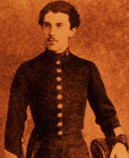

Qualitative and Quantitative Changes in Equilibrium Systems
Callout
Le Châtelier’s Principle
In 1884, the French chemist Henry-Louis Le Châtelier was best known for his work in analyzing chemical reaction systems at equilibrium. He observed that there would be a temporary “non-equilibrium” state in the chemical reaction system, and then a new equilibrium state would become established. The goal behind Le Châtelier’s investigations was to maximize the yield of products from equilibrium systems, using this systematic process of trial and error. Le Châtelier’s Principle states that:
When a chemical system at equilibrium is disturbed by a change in a property, the system adjusts in a way that opposes the change.

Le Châtelier’s Principle and Changes in Concentration
An adjustment by a system at equilibrium that results in a change in the concentrations of reactants and products is called an equilibrium shift. One way to cause an equilibrium shift is to add additional reactants to the reaction vessel. By applying Le Châtelier’s principle, we can predict that increasing the concentration of a reactant will shift the equilibrium to the right, to oppose this change.
Callout
2.png)
This experiment verifies the prediction made by Le Châtelier’s principle, that increasing the concentration of a reactant will shift the equilibrium to the right.
Collision Theory and Concentration Changes in an Equilibrium System
According to collision theory, entities in a chemical system must collide to react. When the concentration of an entity in a chemical reaction system is increased, it is more likely that that entity will collide with other entities. There are simply more of them present. However, only collisions between reactant entities can potentially contribute to a chemical reaction. Even so, the more frequently collisions occur overall, the more likely it is that a chemical reaction will take place.
Collision theory explains the response of a chemical reaction system at equilibrium to a change in concentration as the result of random collisions and probability. When we add more reactant entities in an equilibrium system, the equilibrium shifts to the right because the number of successful collisions for the forward reaction increases. If, instead, we add more product entities, then the number of successive collisions for the reverse reaction will increase and the equilibrium will shift to the left.
Applications of Le Châtelier’s Principle and Concentration Changes
Chemical engineers may apply Le Châtelier’s principle when designing industrial processes based on reversible reactions. Often the production process involves continuous addition of reactants or removal of products. This prevents the chemical reaction system from ever reaching equilibrium so that the formation of products will always be favored.
One example is Nitric acid. Nitric acid has many uses, such as in the synthesis of fertilizers, explosives, dyes, and perfumes. Nitric oxide is not as useful. In the industrial production of aqueous nitric acid, the nitric oxide gas is removed from the chemical reaction system by reacting it with oxygen gas. As the nitric acid product is removed, the equilibrium shifts to the right to compensate, so more reactants form products. This has the desired result of increasing the yield of nitric acid.
Changing an Equilibrium System without Affecting the Equilibrium Position
Catalysts
In a reversible reaction, catalysts increase the reaction rates of the forward and reverse reactions equally, since both reactants and products can form by the lower-energy path. Therefore, a catalyst does not change the equilibrium position, and the final equilibrium concentrations of reactants and products are not altered. However, the reaction reaches equilibrium much faster, which can be very useful.
Inert Gas
If an inert gas is added to an equilibrium system involving a gas mixture and the volume of the container is kept constant, the total number of entities in the volume and therefore the total pressure will increase. However, the partial pressures of the reactant and product entities remain the same. Since there are more entities there are more collisions, but collisions involving the inert gas will not result in a chemical reaction. ese collisions can, however, redirect the movement of any entity involved.